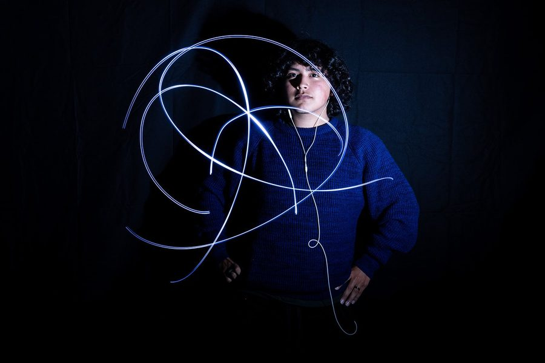

Fotografía Digital
Fotografía 1 y 2
Usa una cámara real en modo manual, aprende a ver como fotógrafo, controla la luz con intención y termina tus imágenes en Adobe Lightroom Classic y Photoshop.
Pioneer Valley High School · Artes Visuales
Fotografía, diseño digital, dibujo y pintura. Aprende con cámaras reales, programas profesionales y en el taller de arte, y crea un portafolio de trabajos terminados.
Sobre el programa
PVHS Visual Arts reúne dos áreas: Medios Digitales, un programa de Educación Técnica Profesional (CTE) en la trayectoria de Diseño, Artes Visuales y Medios, y Arte, donde los estudiantes desarrollan habilidades de dibujo y pintura a mano.
En cada clase, los estudiantes aprenden haciendo: herramientas reales, pasos claros y trabajos terminados que pueden presentar. Al terminar una secuencia de clases, los estudiantes tienen un conjunto de obras que muestra lo que saben hacer.

Optativa que te prepara para la universidad
Todas las clases de Artes Visuales, desde Fotografía y Artes Digitales hasta Introducción al Arte y Pintura 1, cumplen con el requisito “F” de Artes Visuales y Escénicas de A-G para UC y CSU.
Para poder entrar a la Universidad de California (UC) y a la Universidad Estatal de California (CSU), los estudiantes necesitan un año de Artes Visuales y Escénicas. Cualquier clase de Artes Visuales cumple ese requisito, y Medios Digitales además desarrolla habilidades reales para una carrera con herramientas profesionales. Así, una sola optativa puede prepararte para la universidad y para una carrera al mismo tiempo.

Fotografía 1 y 2
Usa una cámara real en modo manual, aprende a ver como fotógrafo, controla la luz con intención y termina tus imágenes en Adobe Lightroom Classic y Photoshop.
Artes Digitales 1 y 2
Aprende los elementos y principios del diseño, y luego usa Adobe Illustrator y Photoshop para crear gráficos limpios y con intención, marcas y trabajos para tu portafolio.
Básico · no necesitas experiencia
Los elementos y principios del arte, dibujo de observación, color y técnicas mixtas. Abierta para todos los estudiantes.
Taller · no necesitas experiencia
Acuarela y acrílico, mezcla de colores, composición y un estilo personal, hasta llegar a pinturas terminadas listas para exhibir.
Organización estudiantil de Educación Técnica Profesional
El programa de Medios Digitales de PVHS está asociado con SkillsUSA en las trayectorias de Fotografía Digital y de Artes Digitales.
SkillsUSA es una organización nacional para estudiantes de carreras técnicas. Ayuda a los estudiantes a desarrollar liderazgo, trabajo en equipo y habilidades para el trabajo, y les da un lugar para mostrar su trabajo técnico fuera del salón.
Nivel en la trayectoria
Un estudiante que profundiza en una trayectoria al pasar de la primera clase a la siguiente, por ejemplo de Fotografía 1 a Fotografía 2, o de Artes Digitales 1 a Artes Digitales 2.
Nivel en la trayectoria
Un estudiante que termina toda la secuencia de clases de una trayectoria. Los completadores salen con un conjunto de trabajos terminados y habilidades reales de la industria.
Cada maestro adapta los detalles para su clase, pero la meta es la misma: los estudiantes se califican por su esfuerzo, su proceso y por cumplir con el estándar de cada entrega, no por tener un “talento natural.”

Fotografía y Artes Digitales
Fotografía 1 y 2 · Artes Digitales 1
14 años de experiencia en la industria

Fotografía
Fotografía 1
14 años de experiencia en la industria

Artes Digitales
Artes Digitales 1 y 2
7 años de experiencia en la industria
Arte
Introducción al Arte · Pintura 1
Aprende el concepto. Crea el trabajo.
Preséntalo como un profesional.El estándar de PVHS Visual Arts
Inscríbete en Fotografía 1 Inscríbete en Artes Digitales 1 Inscríbete en Introducción al Arte
¿Te interesa? Llena el formulario de inscripción para que nuestros maestros se comuniquen contigo, y pregúntale a tu consejero cómo agregar la clase a tu horario.